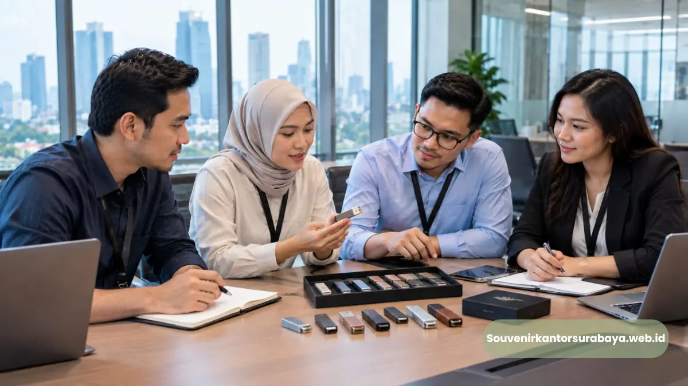

- Mengapa Merchandise Teknologi Relevan untuk Kebutuhan Perusahaan?
- Bagaimana Flashdisk Custom Mendukung Brand Identity Perusahaan?
- Bagaimana Flashdisk Menjadi Bagian dari Seminar Kit?
- Acara Perusahaan Apa yang Cocok Menggunakan Flashdisk Custom?
- Model Flashdisk Apa yang Mendukung Kesan Profesional?
- Bagaimana Menyatukan Flashdisk dengan Notebook dan Tas Seminar?
- Bagaimana Kantor di Jakarta Dapat Menggunakan Flashdisk untuk Corporate Gifting?
- Bagaimana HRD Dapat Memanfaatkan Flashdisk dalam Program Internal?
- Bagaimana Menentukan Komposisi Merchandise untuk Acara?
Flashdisk Custom Logo untuk Kantor Jakarta
Flashdisk custom logo perusahaan menjadi pilihan merchandise teknologi untuk kantor yang membutuhkan souvenir fungsional dengan identitas brand pada seminar dan event korporat.
- Merchandise korporat semakin beragam, termasuk produk teknologi yang memiliki fungsi penggunaan sehari-hari.
- Flashdisk custom dapat digunakan untuk seminar, training, meeting corporate, dan corporate gifting.
- Logo membantu menghubungkan produk dengan identitas visual perusahaan.
- Flashdisk dapat dikombinasikan dengan notebook, pulpen, dan tas menjadi seminar kit.
- Seminarkit ID menyediakan solusi merchandise untuk kebutuhan perusahaan dan acara korporat.
Mengapa Merchandise Teknologi Relevan untuk Kebutuhan Perusahaan?
Merchandise teknologi relevan karena menggabungkan fungsi praktis dan branding sehingga produk dapat tetap digunakan setelah acara perusahaan selesai.
Perusahaan tidak selalu membutuhkan souvenir yang hanya berfungsi sebagai simbol acara. Dalam banyak kegiatan bisnis, produk yang dapat digunakan kembali memberikan fungsi yang lebih jelas bagi penerima.
Flashdisk termasuk merchandise teknologi yang mudah dipadukan dengan kebutuhan kerja dan acara. Produk dapat diberikan kepada peserta seminar, karyawan, partner, maupun pelanggan sesuai tujuan perusahaan.
Dalam corporate gifting, fungsi menjadi salah satu pertimbangan penting karena hadiah perusahaan sebaiknya memiliki relevansi dengan penerima.
Bagaimana Flashdisk Custom Mendukung Brand Identity Perusahaan?
Flashdisk custom menampilkan logo perusahaan pada produk fungsional sehingga identitas visual dapat hadir dalam aktivitas pengguna setelah acara selesai.
Brand identity terdiri dari berbagai elemen visual yang membedakan perusahaan. Merchandise menjadi salah satu media untuk menerapkan identitas tersebut pada objek yang digunakan penerima.
Logo dapat ditempatkan pada permukaan flashdisk dengan ukuran yang proporsional. Warna produk juga dapat dipilih agar tetap harmonis dengan identitas perusahaan.
Untuk perusahaan dengan brand yang memiliki warna kuat, merchandise dapat menggunakan pendekatan visual yang konsisten.
Bagaimana Flashdisk Menjadi Bagian dari Seminar Kit?
Flashdisk dapat menjadi komponen seminar kit bersama notebook, pulpen, tas seminar, dan perlengkapan lain yang mendukung aktivitas peserta.
Seminar kit isi apa saja dapat ditentukan berdasarkan kebutuhan acara. Untuk kegiatan yang menggunakan materi digital, flashdisk dapat menjadi salah satu produk pendukung.
Paket alat tulis seminar dapat dipadukan dengan flashdisk sehingga peserta memperoleh perlengkapan pencatatan dan penyimpanan digital.
Tas seminar kemudian digunakan sebagai wadah seluruh produk. Untuk training, komposisi dapat dikembangkan menjadi goodie bag pelatihan yang berisi perlengkapan sesuai kebutuhan peserta.
Acara Perusahaan Apa yang Cocok Menggunakan Flashdisk Custom?
Flashdisk custom cocok untuk seminar, workshop, training, meeting corporate, gathering, konferensi, exhibition, dan program corporate gifting.
Seminar dan Workshop
Seminar dan workshop biasanya membutuhkan perlengkapan pencatatan. Flashdisk dapat menjadi tambahan untuk kegiatan yang memiliki kebutuhan materi digital.
Training Karyawan
HRD dapat menggunakan flashdisk sebagai merchandise dalam program pelatihan internal.
Meeting Corporate
Meeting dengan partner atau stakeholder dapat menggunakan merchandise yang memiliki tampilan profesional dan fungsi jelas.
Event Korporat
Dalam event korporat, flashdisk dapat menjadi bagian dari paket peserta atau merchandise untuk kelompok penerima tertentu.
Corporate Gifting
Flashdisk juga dapat digunakan sebagai hadiah perusahaan untuk pelanggan, partner, atau pihak yang memiliki hubungan bisnis dengan perusahaan.

Model Flashdisk Apa yang Mendukung Kesan Profesional?
Model flashdisk profesional mengutamakan desain proporsional, permukaan branding yang rapi, bentuk praktis, dan kesesuaian dengan karakter identitas perusahaan.
Tidak semua perusahaan membutuhkan desain merchandise yang sama. Brand dengan karakter formal dapat memilih bentuk minimalis, sedangkan brand yang lebih dinamis dapat menggunakan desain yang lebih ekspresif.
Untuk kebutuhan kantor, bentuk ringkas biasanya lebih mudah dibawa. Produk juga perlu mempertimbangkan area logo sehingga identitas perusahaan dapat terlihat dengan jelas.
Dalam paket seminar, ukuran flashdisk juga perlu mempertimbangkan ukuran notebook dan tas.
Bagaimana Menyatukan Flashdisk dengan Notebook dan Tas Seminar?
Flashdisk, notebook, dan tas seminar dapat menggunakan identitas visual yang sama agar seluruh merchandise tampil sebagai satu paket korporat yang konsisten.
Kesatuan desain tidak berarti semua produk harus memiliki tampilan identik. Perusahaan dapat menggunakan logo yang sama dengan variasi penerapan berdasarkan karakter produk.
Misalnya, logo pada tas dapat dibuat lebih besar, sementara logo pada flashdisk dibuat lebih ringkas. Notebook dapat menggunakan kombinasi logo dan warna brand pada cover.
Hasil akhirnya adalah seminar kit yang memiliki hubungan visual tanpa membuat setiap item terlihat berlebihan.
Bagaimana Kantor di Jakarta Dapat Menggunakan Flashdisk untuk Corporate Gifting?
Kantor di Jakarta dapat menggunakan flashdisk custom sebagai corporate gifting untuk karyawan, peserta acara, partner, pelanggan, dan kebutuhan hubungan bisnis lainnya.
Penggunaan merchandise dapat disesuaikan dengan tujuan pemberian. Untuk karyawan, flashdisk dapat menjadi bagian dari paket training. Untuk partner, produk dapat ditempatkan dalam corporate gift set.
Melayani pengiriman ke Jakarta, kebutuhan dapat dirancang berdasarkan jenis penerima dan format acara. Perusahaan dapat menentukan apakah flashdisk digunakan sebagai produk tunggal atau digabungkan dengan merchandise lain.
Bagaimana HRD Dapat Memanfaatkan Flashdisk dalam Program Internal?
HRD dapat menggunakan flashdisk custom sebagai merchandise untuk onboarding, workshop internal, seminar karyawan, dan kegiatan pengembangan organisasi.
Program HRD sering membutuhkan perlengkapan peserta. Notebook dan pulpen dapat membantu pencatatan, sementara flashdisk dapat menjadi bagian dari merchandise teknologi.
Dalam program onboarding, merchandise dapat menjadi bagian dari perlengkapan awal karyawan. Pada training, flashdisk dapat dipadukan dengan notebook dan alat tulis.
Produk juga dapat diberikan dalam kegiatan internal yang memiliki tema atau program khusus.
Bagaimana Menentukan Komposisi Merchandise untuk Acara?
Komposisi merchandise ditentukan berdasarkan jumlah peserta, karakter acara, kebutuhan penggunaan, identitas brand, dan jenis penerima yang menjadi target perusahaan.
Tidak semua kegiatan membutuhkan paket yang sama. Seminar singkat dapat menggunakan komposisi sederhana, sedangkan event besar dapat membutuhkan paket yang lebih lengkap.
Flashdisk dapat menjadi fokus utama ketika kebutuhan digital cukup kuat. Sebaliknya, notebook dan alat tulis dapat menjadi fokus ketika acara lebih banyak menggunakan pencatatan manual.
Dengan menyesuaikan isi terhadap aktivitas peserta, perusahaan dapat menghindari pengadaan item yang kurang relevan.
Baca Juga
Mengapa Seminarkit ID Dapat Mendukung Kebutuhan Perusahaan?
Seminarkit ID membantu perusahaan mengembangkan paket merchandise yang memadukan flashdisk custom dengan perlengkapan acara sesuai kebutuhan branding dan penerima.
Seminarkit ID dapat digunakan sebagai rujukan untuk kebutuhan seminar kit, merchandise teknologi, dan corporate gifting.
Perusahaan dapat menyampaikan konsep acara, jumlah penerima, jenis merchandise, dan kebutuhan branding. Informasi tersebut membantu penyusunan paket yang lebih relevan.
Rencanakan Flashdisk Custom untuk Kantor
Seminarkit ID membantu menyiapkan flashdisk custom untuk kebutuhan seminar, training, meeting, corporate gifting, dan event perusahaan dengan identitas brand yang konsisten.
Jika kantor membutuhkan merchandise teknologi untuk kegiatan perusahaan di Jakarta, hubungi Seminarkit ID untuk membahas jumlah, konsep acara, kebutuhan logo, dan komposisi souvenir.
Flashdisk dapat digunakan sebagai produk tunggal maupun dikombinasikan menjadi seminar kit yang lebih lengkap sesuai kebutuhan perusahaan.
- Flashdisk custom adalah pilihan merchandise teknologi yang fungsional untuk berbagai acara korporat di Jakarta.
- Logo perusahaan pada flashdisk membantu memperkuat identitas brand dalam setiap penggunaan.
- Flashdisk dapat dikombinasikan dalam seminar kit, goodie bag, maupun paket corporate gifting.
- Hubungi Seminarkit ID untuk konsultasi dan perencanaan merchandise perusahaan Anda.

Hawa Nadira
Tim penulis CorporateGifts ID berfokus pada strategi souvenir kantor, merchandise korporat, dan inovasi brand untuk klien B2B.
Keahlian: Branding perusahaan, produksi souvenir, paket event, desain materi promosi.
Artikel Terkait

Flashdisk Custom Logo untuk Kantor Bandung
Flashdisk custom logo perusahaan untuk kantor di Bandung, cocok untuk seminar, training, meeting, corporate gifting, dan event bisnis.
Baca Selengkapnya
Flashdisk Kartu Souvenir Seminar Kantor Surabaya
Flashdisk kartu menjadi souvenir seminar yang fungsional dan mudah dibawa peserta dalam kegiatan korporat.
Baca Selengkapnya
Seminar Kit Surabaya Custom Logo untuk Branding Perusahaan
Seminar kit dengan cetak custom logo menjadi salah satu strategi branding pasif yang sangat efisien.
Baca Selengkapnya